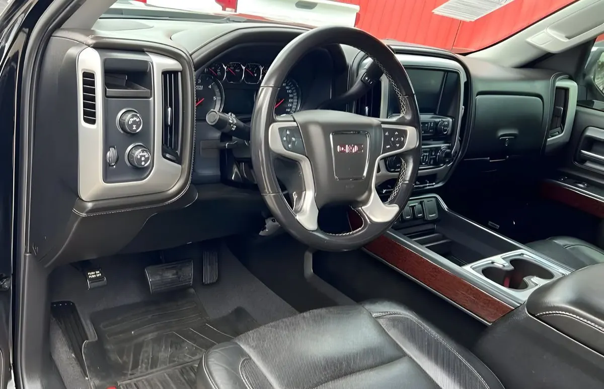

2018 GMC Sierra 1500 SLT
Negro • ID CCH-071

1/4Datos generales
| Año | 2018 |
|---|---|
| Marca | GMC |
| Modelo | Sierra 1500 SLT |
| Tipo | Troca |
| Color | Negro |
| Millas | 105,000 millas |
| Tracción | Por confirmar |
Especificaciones del modelo
| Motor | Estándar: 4.3L V6 (285 hp); opciones: 5.3L V8 (355 hp), 6.2L V8 (420 hp) — varía según unidad |
|---|---|
| Potencia | 285 / 355 / 420 (varía según unidad) |
| Torque | 305 / 383 / 460 lb-pie (varía según unidad) |
| Transmisión | Automática de 6 velocidades (8 velocidades en 6.2L) |
| Tracción del modelo | 4x2 o 4x4 (varía según unidad) |
| Consumo (MPG) | Ciudad: 18 (V6); 16 (5.3L); 15 (6.2L) — varía según unidad. Carretera: 24 (V6); 23 (5.3L); 21 (6.2L) — varía según unidad |
| Combustible | Gasolina |
| Remolque máximo | 12,500 lb |
| Asientos | 6 |
| Carrocería | Pickup |
Datos típicos de este año y modelo, tomados de fuentes públicas (fabricante, KBB, Edmunds). El motor, la tracción y el equipamiento exactos de esta unidad los confirma el dealer.
Ideal para
Para quien necesita una troca para trabajo y para el día a día.
Año, millas y características salen de los datos del inventario; confirma los datos exactos de esta unidad con el dealer. Esta ficha no muestra precios: el dealer los da por escrito.